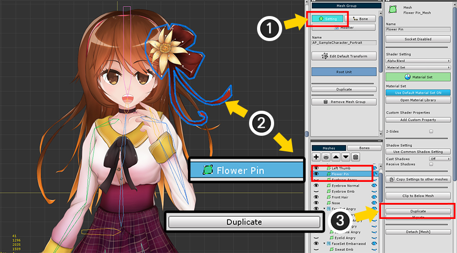
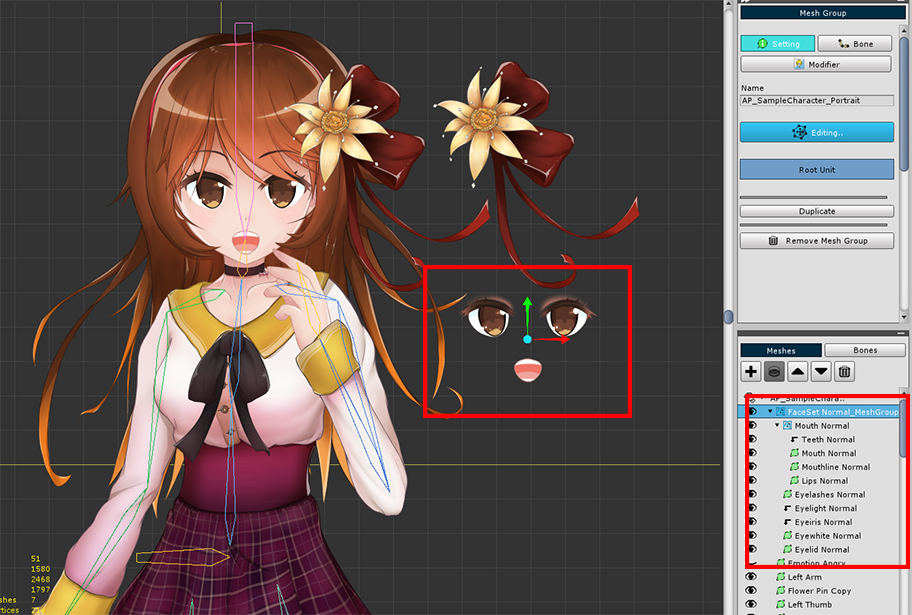
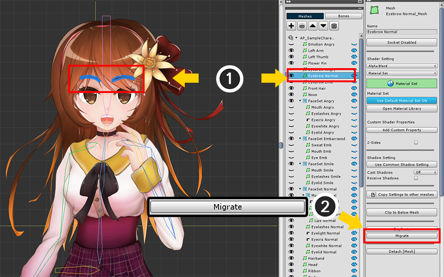

AnyPortrait > 메뉴얼 > 메시 그룹의 하위 객체를 복제/이동하기
메시 그룹의 하위 객체를 복제/이동하기
1.2.2
하위 메시/메시 그룹 복제하기

(1) Setting 탭을 선택합니다.
(2) 복제하고자 하는 메시 객체를 선택합니다.
(3) Duplicate 버튼을 누릅니다.

메시 객체가 복제되었습니다.
같은 방법으로 하위 메시 그룹을 복제할 수 있습니다.

(1) 복제하고자 하는 하위 메시 그룹을 선택합니다.
(2) Duplicate 버튼을 누릅니다.

하위 메시 그룹이 복제되었습니다.
해당 메시 그룹에 속한 모든 객체들이 같이 복제된 것을 볼 수 있습니다.

메시 그룹은 2개 이상의 부모에 속할 수 없기 때문에, 하위 메시 그룹은 별도의 메시 그룹으로 생성됩니다.

복제된 하위 메시나 하위 메시 그룹은 모디파이어가 동일하게 적용됩니다.
애니메이션의 타임라인 레이어로 등록된 경우, 해당 타임라인 레이어도 복제됩니다.
하위 메시의 소속을 변경하여 이동시키기
하위의 메시를 더 상위의 메시 그룹이나, 아니면 더욱 하위의 메시 그룹으로 이동시킬 필요가 있을 수 있습니다.
아래의 방법대로 메시의 소속을 변경하는 것이 가능하며, 주의사항을 꼭 확인하시길 바랍니다.

(1) 소속을 변경할 메시를 선택합니다.
(2) Migrate 버튼을 누릅니다.

현재 메시가 최상위 메시 그룹에 속해있는 상태인데, "자식 메시 그룹"에 속하도록 바꾸어 봅시다.
(1) 대상이 될 자식 메시 그룹을 선택합니다.
(2) Select 버튼을 누릅니다.

메시가 하위 메시 그룹들 중에서 이전보다 자식의 메시 그룹으로 이동하였습니다.

이번에는 반대로 원래의 소속보다 상위인 메시 그룹으로 이동시켜봅시다.
방법은 동일합니다.
(1) 메시를 선택합니다.
(2) Migrate 버튼을 누릅니다.
(3) 대상이 되는 상위의 부모 메시 그룹을 선택합니다.
(4) Select 버튼을 누릅니다.

그런데 이번엔 경고 메시지가 나타납니다.
이것은 메시 그룹의 구조와 모디파이어의 적용 범위에 따라 발생할 수 있는 문제에 대한 안내입니다.
모디파이어는 "자식 메시 그룹 및 그 자식 메시 그룹의 하위 객체(메시, 메시 그룹, 본)"를 대상으로 합니다.
하지만 반대로 "부모 메시 그룹과 부모 메시 그룹에 속한 객체"를 대상으로 적용될 수 없습니다.
이것은 메시 그룹이 자신의 자식에 대한 정보를 가지고 있는 반면, 부모에 대한 정보는 제한적으로 가지는 시스템에 의한 것입니다.
이러한 이유로, 메시가 자식 메시 그룹으로 소속을 바꿀 때는 모디파이어가 이 메시를 인식할 수 있기 때문에 문제가 없습니다.
그리고 반대로, 메시가 부모 메시 그룹으로 소속을 바꿀 때는 원래 소속의 메시 그룹에 속한 모디파이어가 이 메시를 인식하지 못하기 때문에 기존의 데이터가 모두 삭제됩니다.
만약 모디파이어를 "최상위 메시 그룹"에만 추가하였다면 이 메시지는 무시해도 됩니다.
하지만 "자식 메시 그룹"에 모디파이어가 추가된 상태라면 삭제되는 데이터가 있을 수도 있으므로 주의하시길 바랍니다.
메시지를 읽고 문제가 없다면 확인 버튼을 누릅니다.

메시가 부모 메시 그룹으로 이동하였습니다.